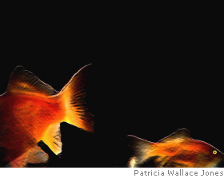

Salli Shepherd
Homesick
Do not let them see you blink,
Mother said, so I am careful to turn
away when my eyes dry out. My grip
on the brush is clumsy. Colours speck
and dazzle, slop like foam on rocks;
the teacher dabs their brilliance
from my flaking arms. Children whisper
behind starfish hands; they go to play
in the bright, hot yard but I stay in,
as Mother told me. Below the window
there’s a tank of golden fish that circle,
circle, following their own reflections.
I dip my fingers in to scoop one up,
watch it flip and shine, cool in my palm,
and press my face deep into the water.
Membranes slide across my thirsty eyes.
I breathe, and breathe, and breathe.

Salli Shepherd lives in Melbourne, Australia. She is co-editor of Soundzine, an audio e-zine for poetry, prose and fine art, and has recently been published in Mimesis and Magma.
|